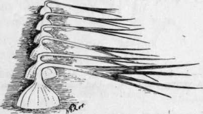
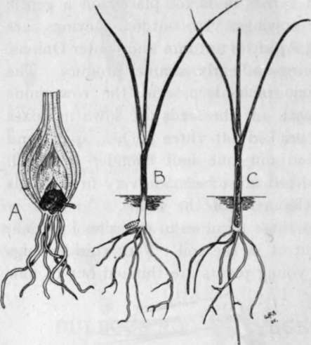
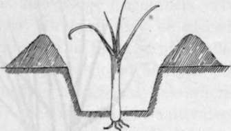
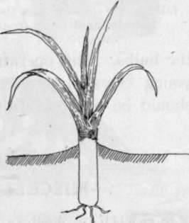
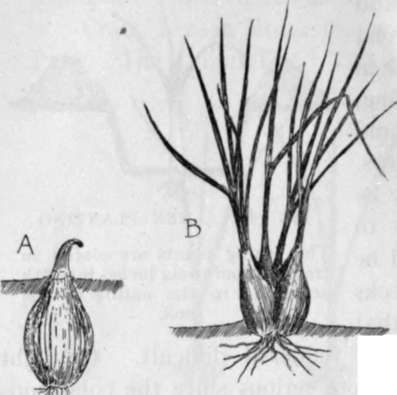

Chapter XI. Bulbous-Rooted Vegetables
Description
This section is from the book "School Gardening", by W. Francis Rankine. Also available from Amazon: School Gardening.
Chapter XI. Bulbous-Rooted Vegetables
Onions, Leeks, Shallots
THE members of this group of vegetables flourish in richly manured and deep soil. With attention to these details the bulbous-rooted crops are easily grown.
The Onion
It is not always recognised that Onions demand a deep soil, yet success in raising this crop is not possible if such conditions are not provided. For this reason it is a good practice to grow Onions on the site of last year's Celery trench, or, if this is not possible, bastard-trench the onion plot and work decayed manure into the soil to a distance of a foot. This preliminary preparation is of the greatest importance, but in very many instances the seed is sown in soil that has not been perfectly cultivated. The seeds may be sown direct in the beds, or raised earlier in boxes placed on a gentle hot-bed. Ordinary sowings, viz., outdoor sowings, are made in March and April for autumn and winter Onions, or in August for spring and early summer produce. The drills should be one inch deep, and the rows nine inches to a foot apart. If the seeds are sown in boxes the seedlings are pricked off three inches apart and subsequently planted out one foot asunder in April. The soil of the seed-bed must be made very firm. This favours rapid development of the bulbs.
For crops such as those required in the school garden, it is best to sow direct in the soil. Very thin sowings are made, and the young plants are thinned out to four inches apart. If the rows are at least nine inches asunder the hoe can be kept at work during development.
When the bulbs are approaching maturity the tops are bent over from the neck. This is known as " finishing " Onions, and it secures full sunlight and warmth for the ripening bulbs. Eventually the bulbs are lifted and stored in "ropes" or in thin layers in a damp-proof place.
Fig. 43. Ripening Onions.
The tops are bent over as shown, and in this way the ripening of the bulbs is hastened.
The Best Varieties :-Bedfordshire Champion, Ailsa Craig, Lemon Rocca (for winter).
Pest. The Onion Fly
This pest is a very serious one, and on many soils makes it almost impossible to grow satisfactory crops. However, by means of soil dressings it is overcome eventually. Its presence is quite unmistakable, for the tips of the tubular leaves turn yellow and finally the plant withers. Examination of the bulb brings to view a number of small white grubs, and these are the larvae of the Onion Fly. The fly itself is on the wing at the end of April and during May ; it lays its eggs on the neck of the Onion or at the base of the leaves ; the grubs emerge from the eggs in about a week and commence their destructive wanderings through the bulb.
Fig. 44. Onion Fly.
(Anthomyia ceparum)
A.-An infested bulb. B.-A maggot entering a young plant. C.-The same plant shown partly in section.
They pass from plant to plant and finally take up their pupal quarters in the soil.
In order to remove the pest, the Onion bed must be dressed with lime, and every infested plant must be burned. Then, when the plants are developing, paraffin emulsion should be sprayed over the rows. These sprayings must be repeated from time to time. The soil should be brought up to the necks of the plants so that the egg-laying process is rendered difficult.
Fig. 45. leek planting.
The young plants are placed in trenches four to six inches in depth according to the nature' of the soil.
Fig. 46 earthing up leeks.
The Best Variety :-Musselburgh. Shallots. This bulbous plant should find a place on every plot on account of its popularity for pickling.
It is easily grown, yet it requires a certain amount of cultural care.
Shallots may be planted in February or March and should be placed in the soil nine inches apart so that only the neck remains above $ ground. It is necessary to plant them firmly, and, as the growth proceeds, the soil should be gradually drawn from the bulbs. This operation aids the development of the young cloves and also keeps them clean. The crops should be lifted in July.
Fig. 47. shallots.
A.-A bulb planted. B.-A clove nearly fully grown showing how the soil is gradually brought away from the bulb.
Continue to: